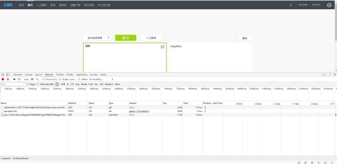
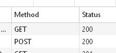
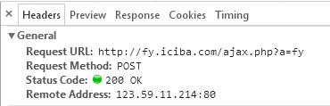
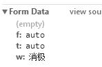
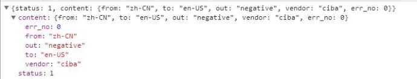

first blood在python的小爬虫
厉害的人正在研究反爬虫……而我
好吧，先是根据教程小甲鱼的有道，代码有些不同。
有道翻译小爬虫
import urllib.request
import urllib.parse
import json
url = '?????'
concent = input('input:')
'''
head = {}
head['User-Agent'] = '???'
'''
data = {}
data['i']= concent
data['from'] = 'AUTO'
data['to'] = 'AUTO'
data['smartresult'] = 'dict'
data['client'] = 'fanyideskweb'
data['salt'] = '215032287070001'
data['sign'] = 'e695439426b4c4b1000eb38e1043b78e'
data['doctype'] = 'json'
data['version'] = '2.1'
data['keyfrom'] = 'fanyi.web'
data['action'] = 'FY_BY_CLICKBUTTION'
data['typeResult'] = 'true'
data = urllib.parse.urlencode(data).encode('utf-8')
req = urllib.request.Request(url,data)
req.add_header('???')
response = urllib.request.urlopen(url,data)
html = response.read().decode('utf-8')
target = json.loads(html)
print('翻译为：%s'%(target['translateResult'][0][0]['tgt']))
接下来两个都是自己独立参考小甲鱼的小爬虫。
百度中文小翻译
（百度这个只能是en-zh）
import urllib.request
import urllib.parse
import json
url = '???'
concent = input('input:')
head = {}
head['User-Agent'] = '???'
data = {}
data['from'] = 'en'
data['to'] = 'zh'
data['query'] = concent
data['transtype'] = 'translang'
data['simple_means_flag'] = '3'
data = urllib.parse.urlencode(data).encode('utf-8')
response = urllib.request.urlopen(url,data)
html = response.read().decode('utf-8')
target = json.loads(html)
print(target['trans_result']['data'][0]['dst'])
a = input('Press any:')
通过摸索，还是能在iciba上实现自由中英翻译，英中翻译，当然附上作弊代码：失效了。。。
检查全是英文的函数
def hasEnlishChar(str_content):
match = re.match(r'.*[a-zA-Z].*', str_content)
return bool(match)
iciba的翻译：
import urllib.request
import urllib.parse
import json
import re
def hasEnlishChar(str_content):
match = re.match(r'.*[a-zA-Z].*', str_content)
return bool(match)
url = '???'
concent = input('input:')
head = {}
head['User-Agent'] = '???'
data = {}
data['f'] = 'auto'
data['t'] = 'auto'
data['w'] = concent
data = urllib.parse.urlencode(data).encode('utf-8')
response = urllib.request.urlopen(url,data)
html = response.read().decode('utf-8')
target = json.loads(html)
if hasEnlishChar(concent):
print(target['content']['word_mean'])
else:
print(target['content']['out'])
a = input('Press any:')
大同小异，反正要留意浏览器审查元素，找到url


如上图会发现在method那里有get，post，懂的
接下来寻找一些必备数据，data，还有返回的信息


